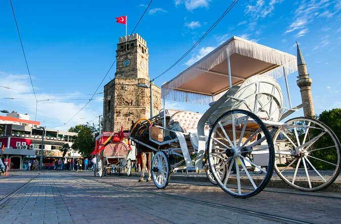

Standing on the edges of Antalya Old Town (Kaleiçi), the Antalya Clock Tower (Antalya Saat Kulesi) testifies to the region’s storied past. Built on the remnants of the city’s Roman walls and converted into a crenelated clock tower by the Ottomans in the early 20th Century, this stone fixture is an instantly recognizable Antalya landmark.
